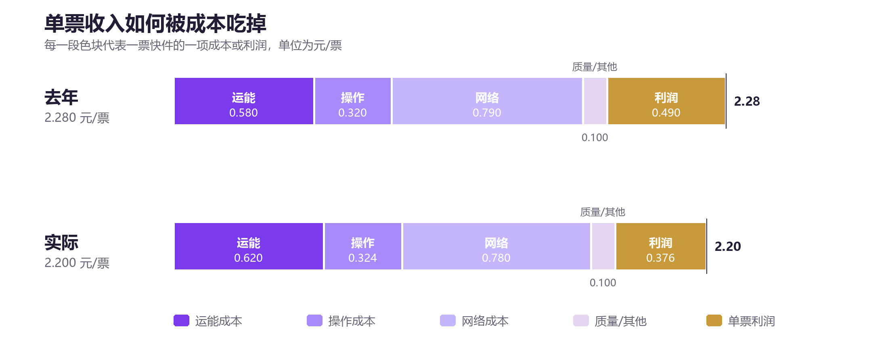

2.1 业务量（日均）：一切故事的起点
定义。 业务量是统计期内完成的快件票数。报表上常见的“日均”，通常等于：
日均业务量 = 统计期累计业务量 ÷ 统计期运营天数
单位常用“万票/日”。如果一个月做 3,600 万票、按 30 天计，日均就是 120 万票。
先分清三个口径。 业务量至少有三种口径，混用会得出完全不同的结论：
| 口径 | 含义 | 用在哪里 |
|---|---|---|
| 出港业务量 | 从本地发出去的票量 | 收入、始发中心操作、干线装载 |
| 进港业务量 | 到达本地、需要派送的票量 | 派费、末端派送、进港操作 |
| 总网业务量 | 全网各环节票量之和 | 集团规模、市场份额 |
同一张报表里，“业务量”如果没有特别说明，通常指出港业务量；但“派费”“派件”相关指标用的是进港业务量。看数时先确认口径，否则会把“我们发了多少”和“我们送了多少”混为一谈。
上升意味着什么。 业务量上升，通常意味着：
- 市场份额提升，规模效应增强；
- 固定成本（场地、设备、管理）被更多票分摊，单票成本有下降空间；
- 对上游客户、下游网点、平台的话语权增强。
但业务量上升也可能是“虚胖”：
- 低价冲量，单票利润为负；
- 刷单、空包、异常件，带来操作量和考核成本；
- 压货、压单，把本月业务量做高，下月暴跌；
- 只求出港量，不管目的区域和货型，导致运能成本上升。
下降意味着什么。 业务量下降，首先冲击的是固定成本分摊：场地、设备、管理人员的成本不会同比例下降，单票成本会上升；随后是网络密度下降，派费效率下降，网点收入减少，服务质量可能恶化。业务量下降往往是“利润下降 → 网点亏损 → 服务下降 → 客户流失”的起点。
与其他指标的关系。
- 业务量是单票成本的分母：同样的总成本，业务量越大，单票成本越低。
- 业务量影响装载率：货量不足，车装不满，亏吨亏方；货量突增，装载率上升，但分拨可能拥堵。
- 业务量影响头部差距：只有增速高于头部企业，差距才会缩小。
- 业务量影响网点质量：网点有量才有收入，没量就容易负毛利、退网。
2.2 头部差距（头部差）：和第一名差多少
定义。 头部差距通常指本公司与行业头部企业（或区域内主要竞争对手）在日均业务量上的差额：
头部差距 = 头部企业日均业务量 − 本公司日均业务量
单位常用“万票”。如果头部企业日均 150 万票，本公司 120 万票，差距就是 30 万票。这个数字为正，表示落后；为负，表示领先。
截图中的“头部差”出现在“网络营销”语境里，和“L4/L5 增量、共配清理”并列，说明它不是一个单纯的财务指标，而是市场份额的作战地图：差距在哪些区域、哪些网点、哪些客户身上，用什么动作追。
上升意味着什么。 头部差距扩大，说明本公司增速低于头部企业，或者头部企业降价抢量更凶。短期看可能是价格战，长期看可能是网络能力、产品结构、平台流量的差距。
下降意味着什么。 头部差距缩小，说明份额在追赶。但要注意“怎么追的”：
- 如果是质量和效率驱动的追赶，差距缩小是健康的；
- 如果是低价换量的追赶，差距缩小可能以利润、网点健康为代价；
- 如果是对手主动收缩，差距缩小也不代表自己变强了。
头部差距的三种拆法。
- 按区域拆：差距主要在哪些省区、城市、网点？是普遍落后，还是局部被对手压制？
- 按客户拆：差距来自哪些品牌客户、产业带、平台订单？是存量流失，还是增量没拿到？
- 按产品拆：差距在标准快递、时效产品、国际件、仓配？不同产品的追法完全不同。
与其他指标的关系。
- 头部差距是业务量增速的相对结果：本公司增长 9%，头部增长 3%，差距缩小；本公司增长 9%，头部增长 15%，差距扩大。
- 头部差距受价格影响：降价可以换量，但会牺牲单票利润；是否值得，要看增量能否摊薄固定成本、能否带来后续复购。
- 头部差距受质量影响：平台指数、时效、CCR 落后，会直接丢失平台流量，差距很难靠价格追回。
2.3 利润与利润完成率：生意的最终答案
定义。 利润是收入减去成本费用后的余额。报表上常见“利润（完成率）”，包含两个数字：
利润 = 营业收入 − 营业成本 − 期间费用 − 税金及附加 ± 其他
利润完成率 = 实际利润 ÷ 预算利润 × 100%
如果预算是 1,500 万元，实际是 1,353.6 万元，完成率就是 90.24%。
利润的几个层次。 看利润不能只看一个数，要分清：
| 层次 | 含义 | 关注点 |
|---|---|---|
| 毛利 | 收入 − 直接成本 | 单票赚不赚钱 |
| 经营利润 | 毛利 − 期间费用 | 日常经营效率 |
| 净利润 | 经营利润 ± 非经常性损益 − 所得税 | 最终股东回报 |
| 考核利润 | 按考核口径调整后的利润 | 绩效兑现 |
不同层次之间可能差很多。比如一笔资产处置收益可以让净利润很好看，但经营利润很差；一笔跨期赔付可以让当月利润很难看，但不代表经营恶化。
上升意味着什么。 利润上升，说明收入增长、成本下降或结构改善。但要拆开看：
- 是量增带来的，还是价升带来的？
- 是成本真降，还是费用递延、赔付跨期、资产处置带来的？
- 是主营改善，还是非经常性收益？
下降意味着什么。 利润下降，先别急着砍成本。用“利润桥”拆成量、价、本、结构四个因素，找到最大缺口。第8章会给出完整演示。
利润完成率的陷阱。
- 预算为负数时，完成率不能简单用“实际 ÷ 预算”，否则越亏越“完成”。应改用“减亏率”或“亏损控制率”。
- 预算口径与核算口径不一致，完成率会失真。
- 完成率是月度考核，但有些投入（自动化、终端、培训）是季度/年度回收，不能因为当月完成率低就停掉。
2.4 单票收入：每一票卖多少钱
定义。 单票收入是平均每票快件的出港收入：
单票收入 = 出港业务收入 ÷ 出港业务量
单位“元/票”。如果月出港收入 7,920 万元、出港业务量 3,600 万票，单票收入就是 2.20 元。
收入由四个因素决定。
- 价格：给客户、给网点的结算价，受市场竞争、客户议价、政策结构影响。
- 重量：按重量计费时，均重越重，单票收入越高。
- 距离：目的区域越远，单价通常越高。
- 产品/服务：时效产品、国际件、仓配、保价等增值服务，单价更高。
用公式表达：
单票收入 = 价格水平 × 重量结构 × 距离结构 × 产品结构
这四个因素里，价格是“主动变量”，重量、距离、产品是“结构变量”。单票收入下降，可能是主动降价，也可能是结构变轻、变近、变低端。
上升意味着什么。 单票收入上升，可能是：
- 提价、减少折扣；
- 货型变重、远端占比上升；
- 高价值产品（圆准达、国际件、直客）占比上升；
- 低价客户流失，结构被动改善。
单票收入上升不一定是好事：如果是“丢量”换来的，固定成本分摊会恶化；如果是“结构变重”带来的，运能成本也会上升。
下降意味着什么。 单票收入下降，可能是：
- 价格战、给客户让利；
- 轻小件占比上升；
- 近端占比上升；
- 低价值产品占比上升；
- 政策结构从“一客户一价”转向统一低价。
单票收入下降也不一定是坏事：如果降价带来了足够的量，摊薄了固定成本，单票利润可能不降反升。关键看价格弹性和成本弹性。
2.5 单票成本：运能、操作、网络“三兄弟”
单票成本不是一个数，而是一组数。最核心的是三项：
| 成本项 | 定义 | 花在哪 | 主要驱动 |
|---|---|---|---|
| 单票运能成本 | 运能总成本 ÷ 业务量 | 干线运输、车辆、燃油、路桥、司机 | 装载率、票均里程、单边占比、车型、能源 |
| 单次操作成本 | 中心操作总成本 ÷ 操作票数 | 分拨中心的人工、设备、场地、物料 | 人均效能、自动化、操作次数、场地利用率 |
| 单票网络成本 | 网络总成本（净额）÷ 业务量 | 派费、网点补贴、终端、末端派送 | 派费标准、直送占比、终端渗透率、网络密度 |
为什么叫“三兄弟”。 它们分别对应快递的三个物理阶段：运、转、派。
- 运能：把包裹从 A 城市运到 B 城市；
- 操作：在始发、中转、目的中心把包裹分来分去；
- 网络：把包裹从网点送到客户手里，或者从客户手里收回来。
三者之间会互相“搬家”：路由调整可以减少中转操作，但可能增加运能里程；直送可以减少网点派费，但可能增加中心操作；压派费可以降低网络成本，但可能把成本转嫁给网点，最终以服务下降的形式回来。
单票操作成本要乘“操作次数”。 很多报表只给“单次操作成本”，但一票快件可能被操作 1 次、2 次甚至 3 次：
单票操作成本 = 单次操作成本 × 平均操作次数
如果单次操作成本 0.18 元，平均操作 1.8 次，单票操作成本就是 0.324 元。中转量增加、路由变复杂，操作次数上升，单票操作成本就会上升，即使单次效率没变。
单票网络成本是“净额”。 网络成本通常要扣减派费收入、网点贡献等，否则会重复计算。看这个指标时，一定要问清楚：是总额还是净额？含不含末端投入？含不含直客配送？含不含考核赔付？
上升/下降的含义。
- 单票运能成本上升：装载变差、里程变长、单边增多、油价/路桥上涨、车型不匹配。
- 单次操作成本上升：人效下降、设备故障、场地拥挤、班次不均衡、操作票数不足。
- 单票网络成本上升：派费上涨、末端投入增加、网络密度下降、直送减少。
三项成本下降，都可能是“真降本”，也可能是“成本转移”或“投入不足”。判断标准是：服务质量有没有同步恶化，网络健康有没有同步变差。
2.6 单票利润与单票经济模型
定义。
单票利润 = 单票收入 − 单票运能成本 − 单票操作成本 − 单票网络成本 − 单票质量/其他成本
或者更简单地：
单票利润 = 单票收入 − 单票总成本
单票利润是生意的“体温计”。 它把规模、价格、成本、结构全部压缩到一个数字里。单票利润 0.376 元，意味着每票赚三毛七分六；乘以 3,600 万票，就是 1,353.6 万元月利润。

一个完整的单票模型。
左右滑动查看完整表格
| 项目 | 去年 | 实际 | 变化 | 解读 |
|---|---|---|---|---|
| 单票收入 | 2.28 | 2.20 | −0.08 | 降价与轻小件占比上升 |
| 单票运能成本 | 0.58 | 0.62 | +0.04 | 装载率下降、票均里程上升、单边增多 |
| 单票操作成本 | 0.32 | 0.324 | +0.004 | 操作次数略增、人效下降 |
| 单票网络成本 | 0.79 | 0.78 | −0.01 | 派费下调、直送占比上升 |
| 单票质量/其他 | 0.10 | 0.10 | 0.00 | 考核赔付增加，被其他费用下降和业务量增长掩盖 |
| 单票总成本 | 1.79 | 1.824 | +0.034 | 运能上涨是主因 |
| 单票利润 | 0.49 | 0.376 | −0.114 | 收入降 8 分，成本涨 3.4 分 |
这张表说明：单票利润下降 0.114 元，不是某一个成本项单独造成的，而是“收入降 0.08 + 成本涨 0.034”共同作用。收入降幅远大于成本降幅，是“量增利减”的典型结构。
盈亏平衡点。 单票利润为 0 时，业务量必须达到：
盈亏平衡业务量 = 固定成本 ÷ 单票贡献毛利
如果固定成本 1,200 万元/月，单票贡献毛利 0.50 元，盈亏平衡业务量就是 2,400 万票/月，即 80 万票/日。低于这个量，规模不经济；高于这个量，每多一票都在摊薄固定成本。
2.7 本章小结
- 业务量是起点，但要分清出港、进港、总网口径；增长要看“质量”。
- 头部差距是份额作战地图，缩小差距要看“怎么追的”。
- 利润是结果，完成率要防止预算口径陷阱。
- 单票收入由价格、重量、距离、产品四因素决定；降价换量有临界点。
- 单票成本分三块：运能、操作、网络；单票操作成本要乘操作次数。
- 单票利润是生意的体温计；单票经济模型是利润分析的核心工具。
下一章，我们把“单票收入”拆开，讲清楚均重、货型、装载、政策、产品和目的区域。